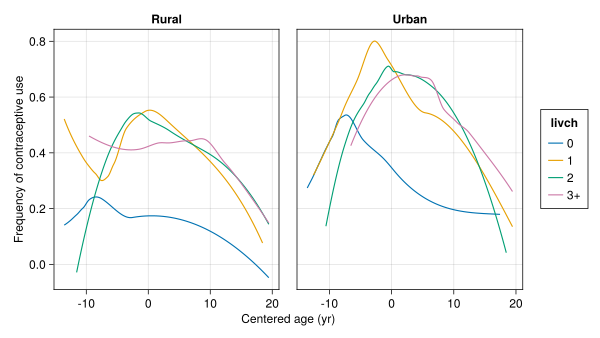
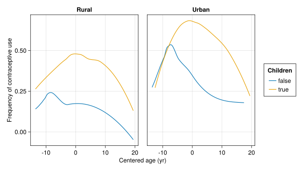
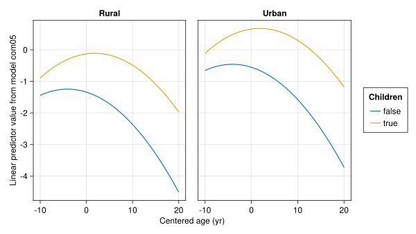
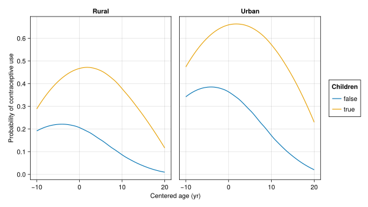
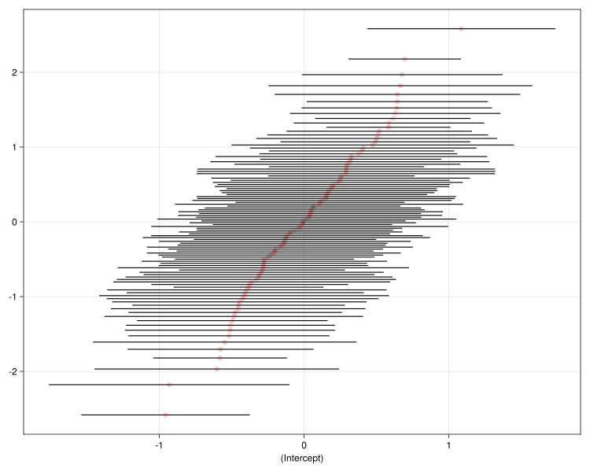

6Generalized Linear Mixed Models for Binary Responses
Attach the packages to be used in this chapter
Code
usingAlgebraOfGraphicsusingCairoMakieusingDataFrames # only used for `describe`usingFreqTablesusingMixedModelsusingMixedModelsMakieusingProgressMeterusingStatsBaseusingStatsModelsconst contrasts =Dict{Symbol,Any}()const nAGQ =9CairoMakie.activate!(; type="svg")ProgressMeter.ijulia_behavior(:clear)
In this chapter we consider mixed-effects models for data sets in which the response is binary, representing yes/no or true/false or correct/incorrect responses.
Because the response must be one of only two possible values we adapt our models to predict the probability of the positive response. As for linear models and linear mixed-effects models, the mean response, \({\boldsymbol{\mu}}\), is determined by a linear predictor, \[
{\boldsymbol{\eta}}={\mathbf{X}}{\boldsymbol{\beta}}+{\mathbf{Z}}{\mathbf{b}}
\tag{6.1}\] depending on the fixed-effects parameters, \({\boldsymbol{\beta}}\), the random effects, \({\mathbf{b}}\), and the model matrices, \({\mathbf{X}}\) and \({\mathbf{Z}}\). For a linear model the mean response, \({\boldsymbol{\mu}}\), is equal to the linear predictor, \({\boldsymbol{\eta}}\). But for a generalized linear model \({\boldsymbol{\eta}}\) determines \({\boldsymbol{\mu}}\) according to a link function, \(g\). For historical reasons it is the function taking an element of \({\boldsymbol{\mu}}\) to the corresponding element of \({\boldsymbol{\eta}}\) that is called the link. The transformation in the opposite direction, from \({\boldsymbol{\eta}}\) to \({\boldsymbol{\mu}}\), is called the inverse link.
As in previous chapters, we will begin with an example to help illustrate these ideas.
6.1 Artificial contraception use in regions of Bangladesh
One of the test data sets from the Center for Multilevel Modelling, University of Bristol is derived from the 1989 Bangladesh Fertility Survey, (Huq & Cleland, 1990). The data are a subsample of 1934 women selected from 60 of the 64 political districts or zila, available as the contra data set in the MixedModels package.
contra =Table(MixedModels.dataset(:contra))
Table with 5 columns and 1934 rows:
dist urban livch age use
┌────────────────────────────────
1 │ D01 Y 3+ 18.44 N
2 │ D01 Y 0 -5.56 N
3 │ D01 Y 2 1.44 N
4 │ D01 Y 3+ 8.44 N
5 │ D01 Y 0 -13.56 N
6 │ D01 Y 0 -11.56 N
7 │ D01 Y 3+ 18.44 N
8 │ D01 Y 3+ -3.56 N
9 │ D01 Y 1 -5.56 N
10 │ D01 Y 3+ 1.44 N
11 │ D01 Y 0 -11.56 Y
12 │ D01 Y 0 -2.56 N
13 │ D01 Y 1 -4.56 N
14 │ D01 Y 3+ 5.44 N
15 │ D01 Y 3+ -0.56 N
16 │ D01 Y 3+ 4.44 Y
17 │ D01 Y 0 -5.56 N
18 │ D01 Y 3+ -0.56 Y
19 │ D01 Y 1 -6.56 Y
20 │ D01 Y 2 -3.56 N
21 │ D01 Y 0 -4.56 N
22 │ D01 Y 0 -9.56 N
23 │ D01 Y 3+ 2.44 N
⋮ │ ⋮ ⋮ ⋮ ⋮ ⋮
with summary
Code
let df =DataFrame(contra)describe(df, :mean, :min, :median, :max, :nunique, :eltype)end
5×7 DataFrame
Row
variable
mean
min
median
max
nunique
eltype
Symbol
Union…
Any
Union…
Any
Union…
DataType
1
dist
D01
D61
60
String
2
urban
N
Y
2
String
3
livch
0
3+
4
String
4
age
0.00204757
-13.56
-1.56
19.44
Float64
5
use
N
Y
2
String
The response of interest is use, whether the woman chooses to use artificial contraception, which is a binary response with only two possible values, N and Y. The covariates include the district (dist) in which the woman resides, the number of live children she currently has (livch, coded as 0, 1, 2, and 3+), her age, and urban, also coded as N and Y, indicating rural or urban.
Note that the mean of these age values is close to zero but not exactly zero. This occurs when the values have been centered about the sample mean then rounded. In this case it appears that the ages were recorded as a whole number of years and the mean was rounded to two decimal places ending in .56. Thus, all the negative values end in .56 and the positive values end in .44. The mean of these rounded, centered values is not exactly zero because of the rounding after centering.
Centering the ages allows for meaningful interpretation of intercepts and fixed effects for other covariates, because they refer to an age within the range of the observed ages. Regretably, the information on what the centering age (i.e. the original mean age) was does not seem to be available.
6.1.1 Plotting the binary response
Producing informative graphical displays of a binary response as it relates to covariates is somewhat more challenging that the corresponding plots for responses on a continuous scale. If we were to plot the 1934 responses as 0/1 values versus, for example, the woman’s centered age, we would end up with a rather uninformative plot, because all the points would fall on one of two horizontal lines, at \(y=0\) and \(y=1\).
One approach to illustrating the structure of the data more effectively is to add scatterplot smoother lines to the plot, as in Figure 6.1,
Code
draw(data(contra) *mapping(:age =>"Centered age (yr)",:use =>==("Y") =>"Frequency of contraceptive use"; col=:urban =>renamer(["N"=>"Rural", "Y"=>"Urban"]), color=:livch, ) *smooth(); figure=(; resolution=(800, 450)),)

Figure 6.1: Smoothed relative frequency of contraception use versus centered age for women in the 1989 Bangladesh Fertility Survey
to show the trend in the response with respect to the covariate. Once we have the smoother lines in such a plot we can omit the data points themselves, as we did here, because they add very little information.
The first thing to notice about the plot is that the proportion of women using contraception is not linear in age, which, on reflection, makes sense. A woman in the middle of this age range (probably corresponding to an age around 25) is more likely to use artificial contraception than is a girl in her early teens or a woman in her mid-forties. We also see that women in an urban setting are more likely to use contraception than those in a rural setting and that women with no live children are less likely to use contraception than are women who already have children. There do not seem to be strong differences between women who have 1, 2 or 3 or more children compared to the differences between women with children and those without children.
Interestingly, the quadratic pattern with respect to age does not seem to have been noticed in other analyses of these data. Comparisons of model fits through different software systems, as provided by the Center for Multilevel Modelling, incorporate only a linear term in age, even though the pattern is clearly nonlinear. The lesson here is similar to what we have seen in other examples; careful plotting of the data should, whenever possible, precede attempts to fit models to the data.
6.1.2 Initial GLMM fit to the contraception data
Fitting a generalized linear mixed model (GLMM) is very similar to fitting a linear mixed model (LMM). We call the fit function with the first three arguments being the model type, MixedModel, then a formula specifying the response, fixed-effects terms and random-effects terms, then a data table. For GLMMs we also specify a fourth positional argument which is a distribution - in this case Bernoulli().
Establishing the contrasts and fitting a preliminary model with random effects for dist, main effects for livch, age, age^2, and urban, plus interaction terms for age & urban and age^2 & urban can be done as
Notice that in the formula language defined by the StatsModels package, an interaction term is written with the & operator. Crossing of terms, which generates main effects and interactions, is written with the * operator (as in the formula language in R). An interaction of a numeric variable with itself is performed by multiplication so the coefficient labelled age & age in the table is the quadratic term in age. (Notice that, in this formula language, age * age, which may easily be interpreted as age^2, expands to age + age^2.) Thus, what is written in the formula as a three-way interaction age * age * urban becomes an urban contrast plus linear and quadratic terms for age and each of their interactions with the urban contrast, which will be coded as -1 for N and +1 for Y.
A fifth positional argument can be used to specify the link function, described in Section 6.2, but in most cases the canonical link function for the distribution is used. In the case of the Bernoulli distribution the canonical link is the logit link.
As for LMMs, the named argument contrasts specifies the contrasts to apply to some of the covariates in a key-value dictionary. Another named argument, nAGQ, specifies the number of quadrature points to use in an adaptive Gauss-Hermite quadrature rule for evaluating the deviance (see Section C.6 for details). A small, odd number, such as nAGQ=9 defined in the first code block of this chapter, is the preferred choice.
The interpretation of the coefficients in this model is somewhat different from the linear mixed models coefficients that we examined previously, but many of the model-building steps are similar. A rough assessment of the utility of a particular term in the fixed-effects part of the model can be obtained from examining the estimates of the coefficients associated with it and their standard errors, which are the basis for the z (z-statistic) and p (p-value) columns in the table. However, these p-values are even more approximate than those provided for LMMs. To perform a more accurate test of whether a particular term is useful we omit it from the model, refit and compare the reduced model fit to the original according to the change in deviance.
We will examine the terms in the model first and discuss the interpretation of the coefficients in Section 6.2.
6.1.3 Model building for the contra data
We noted that Figure 6.1 shows similar patterns for women with children, whether they have one, two, or three or more children. We have set the contrasts for the livch factor to be offsets relative to the reference level, in this case women who do not have any live children. Although the coefficients labeled livch: 1, livch: 2, and livch: 3+ are all large relative to their standard errors, they are reasonably close to each other. This confirms our earlier impression that the main distinction is between women with children and those without and, for those who do have children, the number of children is not an important distinction.
After incorporating a new variable ch — an indicator of whether the woman has any children — in the data,
Table with 6 columns and 1934 rows:
dist urban livch age use ch
┌───────────────────────────────────────
1 │ D01 Y 3+ 18.44 N true
2 │ D01 Y 0 -5.56 N false
3 │ D01 Y 2 1.44 N true
4 │ D01 Y 3+ 8.44 N true
5 │ D01 Y 0 -13.56 N false
6 │ D01 Y 0 -11.56 N false
7 │ D01 Y 3+ 18.44 N true
8 │ D01 Y 3+ -3.56 N true
9 │ D01 Y 1 -5.56 N true
10 │ D01 Y 3+ 1.44 N true
11 │ D01 Y 0 -11.56 Y false
12 │ D01 Y 0 -2.56 N false
13 │ D01 Y 1 -4.56 N true
14 │ D01 Y 3+ 5.44 N true
15 │ D01 Y 3+ -0.56 N true
16 │ D01 Y 3+ 4.44 Y true
17 │ D01 Y 0 -5.56 N false
18 │ D01 Y 3+ -0.56 Y true
19 │ D01 Y 1 -6.56 Y true
20 │ D01 Y 2 -3.56 N true
21 │ D01 Y 0 -4.56 N false
22 │ D01 Y 0 -9.56 N false
23 │ D01 Y 3+ 2.44 N true
⋮ │ ⋮ ⋮ ⋮ ⋮ ⋮ ⋮
Code
let df =DataFrame(contra)describe(df, :mean, :min, :median, :max, :nunique, :eltype)end
6×7 DataFrame
Row
variable
mean
min
median
max
nunique
eltype
Symbol
Union…
Any
Union…
Any
Union…
DataType
1
dist
D01
D61
60
String
2
urban
N
Y
2
String
3
livch
0
3+
4
String
4
age
0.00204757
-13.56
-1.56
19.44
Float64
5
use
N
Y
2
String
6
ch
0.725957
false
1.0
true
Bool
we fit a reduced model.
com02 =let form =@formula(use ~1+ ch + age * age * urban + (1| dist))fit(MixedModel, form, contra, Bernoulli(); contrasts, nAGQ)end
Minimizing 435 Time: 0:00:00 ( 0.96 ms/it)
Est.
SE
z
p
σ_dist
(Intercept)
-0.2194
0.1155
-1.90
0.0575
0.4773
ch: true
0.4342
0.0741
5.86
<1e-08
age
0.0035
0.0082
0.43
0.6674
urban: Y
0.3733
0.0801
4.66
<1e-05
age & age
-0.0048
0.0008
-6.27
<1e-09
age & urban: Y
-0.0068
0.0069
-0.99
0.3228
age & age & urban: Y
-0.0004
0.0007
-0.49
0.6273
Comparing this model to the previous model
MixedModels.likelihoodratiotest(com02, com01)
model-dof
deviance
χ²
χ²-dof
P(>χ²)
use ~ 1 + ch + age + urban + age & age + age & urban + age & age & urban + (1 | dist)
8
2371
use ~ 1 + livch + age + :(abs2(age)) + urban + age & urban + :(abs2(age)) & urban + (1 | dist)
10
2371
0
2
0.7823
indicates that the reduced model is adequate.
Apparently neither the second-order interaction age & urban nor the third-order interaction age & age & urban is significant and we fit a model without these terms.
com03 =let form =@formula(use ~1+ urban + ch + age * age + (1| dist))fit(MixedModel, form, contra, Bernoulli(); contrasts, nAGQ)end
Minimizing 137 Time: 0:00:00 ( 0.92 ms/it)
Est.
SE
z
p
σ_dist
(Intercept)
-0.2303
0.1140
-2.02
0.0434
0.4774
urban: Y
0.3462
0.0599
5.78
<1e-08
ch: true
0.4303
0.0737
5.84
<1e-08
age
0.0063
0.0078
0.80
0.4246
age & age
-0.0046
0.0007
-6.47
<1e-10
A likelihood ratio test
MixedModels.likelihoodratiotest(com03, com02)
model-dof
deviance
χ²
χ²-dof
P(>χ²)
use ~ 1 + urban + ch + age + age & age + (1 | dist)
6
2373
use ~ 1 + ch + age + urban + age & age + age & urban + age & age & urban + (1 | dist)
8
2371
2
2
0.4119
indicates that these terms can safely be eliminated.
A plot of the smoothed observed proportions versus centered age by urban and ch, Figure 6.2,
Code
draw(data(contra) *mapping(:age =>"Centered age (yr)",:use =>==("Y") =>"Frequency of contraceptive use"; col=:urban =>renamer(["N"=>"Rural", "Y"=>"Urban"]), color=:ch =>"Children", ) *smooth(); figure=(; resolution=(800, 450)),)

Figure 6.2: Smoothed relative frequency of contraception use versus centered age for women in the 1989 Bangladesh Fertility Survey. The livch factor has been collapsed to children/nochildren.
indicates that all four groups have a quadratic trend with respect to age but the location of the peak proportion is shifted for those without children relative to those with children. Incorporating an interaction of age and ch allows for such a shift.
com04 =let form =@formula(use ~1+ urban + ch * age + age & age + (1| dist))fit(MixedModel, form, contra, Bernoulli(); contrasts, nAGQ)end
Minimizing 149 Time: 0:00:00 ( 0.98 ms/it)
Est.
SE
z
p
σ_dist
(Intercept)
-0.3614
0.1275
-2.84
0.0046
0.4757
urban: Y
0.3567
0.0602
5.93
<1e-08
ch: true
0.6054
0.1035
5.85
<1e-08
age
-0.0131
0.0110
-1.19
0.2352
ch: true & age
0.0342
0.0127
2.69
0.0072
age & age
-0.0058
0.0008
-6.89
<1e-11
Comparing this fitted model to the previous one
MixedModels.likelihoodratiotest(com03, com04)
model-dof
deviance
χ²
χ²-dof
P(>χ²)
use ~ 1 + urban + ch + age + age & age + (1 | dist)
6
2373
use ~ 1 + urban + ch + age + ch & age + age & age + (1 | dist)
7
2365
8
1
0.0047
confirms the usefulness of this term.
A series of such model fits led to a model with random effects for the combinations of dist and urban, because differences between urban and rural women in the same district were comparable to differences between districts, even after accounting for an effect of urban at the fixed-effects (or population) level.
com05 =let form =@formula( use ~1+ urban + ch * age + age & age + (1| dist & urban) )fit(MixedModel, form, contra, Bernoulli(); contrasts, nAGQ)end
Minimizing 150 Time: 0:00:00 ( 0.96 ms/it)
Est.
SE
z
p
σ_dist & urban
(Intercept)
-0.3415
0.1269
-2.69
0.0071
0.5761
urban: Y
0.3936
0.0859
4.58
<1e-05
ch: true
0.6064
0.1045
5.80
<1e-08
age
-0.0129
0.0112
-1.16
0.2471
ch: true & age
0.0332
0.0128
2.59
0.0096
age & age
-0.0056
0.0008
-6.66
<1e-10
In more detail,
Code
println(com05)
Generalized Linear Mixed Model fit by maximum likelihood (nAGQ = 9)
use ~ 1 + urban + ch + age + ch & age + age & age + (1 | dist & urban)
Distribution:
2353.8242 2368.4836 2368.5418 2407.4550
Variance components:
Column Variance Std.Dev.
dist & urban (Intercept) 0.331928 0.576132
Number of obs: 1934; levels of grouping factors: 102
Fixed-effects parameters:
────────────────────────────────────────────────────────
Coef. Std. Error z Pr(>|z|)
────────────────────────────────────────────────────────
(Intercept) -0.341475 0.126906 -2.69 0.0071
urban: Y 0.393592 0.0859086 4.58 <1e-05
ch: true 0.606449 0.10453 5.80 <1e-08
age -0.0129098 0.0111549 -1.16 0.2471
ch: true & age 0.0332106 0.0128228 2.59 0.0096
age & age -0.00562463 0.0008441 -6.66 <1e-10
────────────────────────────────────────────────────────
Notice that, although there are 60 distinct districts, there are only 102 distinct combinations of dist and urban represented in the data. In 15 of the 60 districts there are no rural women in the sample and in 3 districts there are no urban women in the sample, as shown in a frequency table
To this point the only difference we have encountered between fitting generalized linear mixed models (GLMMs) and linear mixed models (LMMs) is the need to specify the distribution family in a call to fit. The formula specification is identical and the assessment of the significance of terms using likelihood ratio tests is similar. This is intentional. We have emphasized the use of likelihood ratio tests on terms, whether fixed-effects or random-effects terms, exactly so the approach will be general.
However, the interpretation of the coefficient estimates in the different types of models is different. In a linear mixed model the conditional mean (or “expected value”) of the response given the random effects is simply the value of the linear predictor, \({\boldsymbol{\mu}}={\boldsymbol{\eta}}={\mathbf{X}}{\boldsymbol{\beta}}+{\mathbf{Z}}{\mathbf{b}}\) . That is, if we assume that we know the values of the fixed-effects parameters, \({\boldsymbol{\beta}}\), and the random effects, \({\mathbf{b}}\), then the expected response for a particular combination of covariate values is a linear combination of these coefficients where the particular linear combination is determined by values of the covariates for that observation. Individual coefficients can be interpreted as slopes of the fitted response with respect to a numeric covariate or as shifts between levels of a categorical covariate.
It is worthwhile emphasizing this relationship, and how it is used to form predictions from the model, by illustrating the process on a grid of covariate values. To this end, we will take a brief excursion into creating grids of covariate values and evaluating linear predictors.
6.2.1 Creating grids of covariate values
Suppose that we wish to plot the “population” linear predictor values from model com05. That is, we will consider only the fixed-effects terms in the model formula and ignore the random effects. We want to create a plot like Figure 6.2 by evaluating the linear predictor for a range of age values for each of the combinations of ch and urban.
First we construct a table of covariate values, newdata, containing the Cartesian product of values of these covariates, created using a generator expression returning NamedTuples, which is the standard row-wise represention of tabular data.
newdata =Table( (; age, ch, urban) for age in-10:3:20, ch in [false, true], urban in ["N", "Y"])
Table with 3 columns and 44 rows:
age ch urban
┌──────────────────
1 │ -10 false N
2 │ -7 false N
3 │ -4 false N
4 │ -1 false N
5 │ 2 false N
6 │ 5 false N
7 │ 8 false N
8 │ 11 false N
9 │ 14 false N
10 │ 17 false N
11 │ 20 false N
12 │ -10 true N
13 │ -7 true N
14 │ -4 true N
15 │ -1 true N
16 │ 2 true N
17 │ 5 true N
18 │ 8 true N
19 │ 11 true N
20 │ 14 true N
21 │ 17 true N
22 │ 20 true N
23 │ -10 false Y
⋮ │ ⋮ ⋮ ⋮
Next we isolate the fixed-effects terms from the formula for model com05 by selecting its rhs property (the right-hand side of the formula) then filtering out any random-effects terms in the expression.
feform =filter( t -> !isa(t, MixedModels.AbstractReTerm), com05.formula.rhs,);
Note
Add extractors for different parts of the formula to MixedModels.jl
Finally, we evaluate the model columns for this reduced formula. These are returned as an array of matrices, in this case containing only one matrix.
The predicted linear predictor, \({\boldsymbol{\eta}}\), for the newdata table and the fixed-effects estimate for model com05 is the product of this model matrix and the fixef coefficients.
newdata =Table(newdata; η=newX *fixef(com05))
Table with 4 columns and 44 rows:
age ch urban η
┌─────────────────────────────
1 │ -10 false N -1.44278
2 │ -7 false N -1.29428
3 │ -4 false N -1.24703
4 │ -1 false N -1.30102
5 │ 2 false N -1.45626
6 │ 5 false N -1.71273
7 │ 8 false N -2.07046
8 │ 11 false N -2.52942
9 │ 14 false N -3.08963
10 │ 17 false N -3.75108
11 │ 20 false N -4.51378
12 │ -10 true N -0.894089
13 │ -7 true N -0.546331
14 │ -4 true N -0.299815
15 │ -1 true N -0.154543
16 │ 2 true N -0.110515
17 │ 5 true N -0.167729
18 │ 8 true N -0.326188
19 │ 11 true N -0.585889
20 │ 14 true N -0.946834
21 │ 17 true N -1.40902
22 │ 20 true N -1.97245
23 │ -10 false Y -0.65559
⋮ │ ⋮ ⋮ ⋮ ⋮
draw(data(newdata) *mapping(:age =>"Centered age (yr)",:η =>"Linear predictor value from model com05"; col=:urban =>renamer(["N"=>"Rural", "Y"=>"Urban"]), color=:ch =>"Children", ) *smooth(); figure=(; resolution=(800, 450)),)

Figure 6.3: Linear predictor versus centered age from model com05
shows that these curves follow the general trends of the data plot. However, the vertical axis is not on a probability scale. Indeed most of the values of the linear predictor are negative.
This brings us to the topic of link functions.
6.2.2 The logit link function for binary responses
The probability model for a binary response is the Bernoulli distribution, which is a very simple probability distribution in that its “support” — the set of possible values of the random variable — is just 0 or 1. If the probability of the response 1 is \(p\) then the probability of 0 must be \(1-p\). It is easy to establish that the expected value is also \(p\). For consistency across distribution families we write this expected response as \(\mu\) instead of \(p\). We should, however, keep in mind that, for this distribution, \(\mu\) corresponds to a probability and hence must satisfy \(0\le\mu\le 1\).
In general we don’t want to have restrictions on the values of the linear predictor so we equate the linear predictor to a function of \(\mu\) that has an unrestricted range. In the case of the Bernoulli distribution with the canonical link function we equate the linear predictor to the log odds or logit of the positive response. That is \[
\eta = \log\left(\frac{\mu}{1-\mu}\right) .
\tag{6.2}\]
To understand why this is called the “log odds” recall that \(\mu\) corresponds to a probability in \([0,1]\). The corresponding odds ratio, \(\frac{\mu}{1-\mu}\), is in \([0,\infty)\) and the logarithm of the odds ratio, \(\mathrm{logit}(\mu)\), is in \((-\infty, \infty)\).
The inverse of the logit link function, \[
\mu = \frac{1}{1+\exp(-\eta)} ,
\tag{6.3}\] is called the logistic function and is shown in Figure 6.4.
Code
let fig =Figure(; resolution=(800, 400)) ax =Axis(fig[1, 1]; xlabel="η", ylabel="μ")lines!(ax, -5.5..5.5, η ->inv(1+exp(-η))) figend
Figure 6.4: The logistic function, which is the inverse to the logit link function.
The inverse link takes a value on the unrestricted range, \((-\infty,\infty)\), and maps it to the probability range, \([0,1]\). It happens this function is also the cumulative distribution function for the standard logistic distribution, available in Distributions.jl as cdf(Logistic(), η). In some presentations the relationship between the logit link and the logistic distribution is emphasized but that often leads to questions of why we should focus on the logistic distribution. Also, it is not clear how this approach would generalize to other distributions such as the Poisson or the Gamma distributions.
6.2.3 Canonical link functions
A way of deriving the logit link that does generalize to a class of common distributions, in what is called the exponential family, is to consider the logarithm of the probability function (for discrete distributions) or the probability density function (for continuous distributions). The probability function for the Bernoulli distribution is \(\mu\) for \(y=1\) and \(1-\mu\) for \(y=0\). If we write this in a somewhat contrived way as \(\mu^y+(1-\mu)^{1-y}\) for \(y\in\{0,1\}\) then the logarithm of the probability function becomes \[
\log\left(\mu^y+(1-\mu)^{1-y}\right) = \log(1-\mu) +
y\,\log\left(\frac{\mu}{1-\mu}\right) .
\tag{6.4}\] Notice that the logit link function is the multiple of \(y\) in the last term.
The characteristic of distributions in the exponential family is that the logarithm of the probability mass function or probability density function, whichever is appropriate, can be expressed as a sum of up to three terms: one that involves \(y\) only, one that involves the parameters only, and the product of \(y\) and a function of the parameters. This function is the canonical link for the distribution.
In the case of the Poisson distribution the probability function is \(\frac{e^{-\mu}\mu^y}{y!}\) for \(y\in\{0,1,2,\dots\}\) so the log probability function is \[
-\log(y!)-\mu+y\log(\mu) .
\tag{6.5}\] and the canonical link function is \(\log(\mu)\).
6.2.4 Interpreting coefficient estimates
Returning to the interpretation of the estimated coefficients in model com05 we apply exactly the same interpretation as for a linear mixed model but taking into account that slopes or differences in levels are with respect to the logit or log-odds function. If we wish to express results in the probability scale then we should apply the logistic function to whatever combination of coefficients is of interest to us.
Table with 5 columns and 44 rows:
age ch urban η μ
┌────────────────────────────────────────
1 │ -10 false N -1.44278 0.191116
2 │ -7 false N -1.29428 0.215129
3 │ -4 false N -1.24703 0.223215
4 │ -1 false N -1.30102 0.213993
5 │ 2 false N -1.45626 0.189041
6 │ 5 false N -1.71273 0.152809
7 │ 8 false N -2.07046 0.112002
8 │ 11 false N -2.52942 0.0738212
9 │ 14 false N -3.08963 0.043537
10 │ 17 false N -3.75108 0.0229531
11 │ 20 false N -4.51378 0.0108382
12 │ -10 true N -0.894089 0.290267
13 │ -7 true N -0.546331 0.366716
14 │ -4 true N -0.299815 0.425603
15 │ -1 true N -0.154543 0.461441
16 │ 2 true N -0.110515 0.472399
17 │ 5 true N -0.167729 0.458166
18 │ 8 true N -0.326188 0.419169
19 │ 11 true N -0.585889 0.357579
20 │ 14 true N -0.946834 0.279522
21 │ 17 true N -1.40902 0.196388
22 │ 20 true N -1.97245 0.122126
23 │ -10 false Y -0.65559 0.341731
⋮ │ ⋮ ⋮ ⋮ ⋮ ⋮
producing the population predictions on the probability scale, as shown in Figure 6.5.
Code
draw(data(newdata) *mapping(:age =>"Centered age (yr)",:μ =>"Probability of contraceptive use"; col=:urban =>renamer(["N"=>"Rural", "Y"=>"Urban"]), color=:ch =>"Children", ) *smooth(); figure=(; resolution=(800, 450)),)

Figure 6.5: Predicted probability of contraception use versus centered age from model com05.
On the probability scale we can compare the predictions to the observed frequencies shown with scatterplot smoother lines in Figure 6.2.
Consider the predictions on both the linear predictor and probability (or expected value) scales for women with centered ages of 2.0.
filter(r -> r.age ==2, newdata)
Table with 5 columns and 4 rows:
age ch urban η μ
┌───────────────────────────────────────
1 │ 2 false N -1.45626 0.189041
2 │ 2 true N -0.110515 0.472399
3 │ 2 false Y -0.669071 0.338705
4 │ 2 true Y 0.67667 0.662995
The predicted probability of woman with centered age of 2, with children, living in an urban environment using artificial contraception is about 2/3, which is reasonably close to the smoothed frequency for that combination of covariates in Figure 6.2.
Similarly, a woman of centered age of 2 without children living in a rural environment has a predicted probability of using artificial contraception of a little less than 20%, which also corresponds to the smoother line for that combination (blue line in the left panel) in Figure 6.2.
6.3 Interpretation of random effects
We should also be aware that the random effects are defined on the linear predictor scale and not on the probability scale. A normal probability plot of the conditional modes of the random effects for model com05, Figure 6.6
Code
qqcaterpillar(com05)

Figure 6.6: Caterpillar plot of the conditional modes of the random-effects for model com05
shows that the smallest random effects are approximately -1 and the largest are approximately 1.
The numerical values and the identifier of the combination of dist and urban for these extreme values can be obtained from the first few rows and the last few rows of the sorted random-effects table.
Table with 6 columns and 26 rows:
dist urban livch age use ch
┌───────────────────────────────────────
1 │ D34 N 0 -11.56 Y false
2 │ D34 N 1 3.44 Y true
3 │ D34 N 2 4.44 Y true
4 │ D34 N 3+ -3.56 Y true
5 │ D34 N 0 -8.56 Y false
6 │ D34 N 2 8.44 N true
7 │ D34 N 3+ 8.44 Y true
8 │ D34 N 3+ 4.44 Y true
9 │ D34 N 2 -3.56 Y true
10 │ D34 N 3+ 8.44 Y true
11 │ D34 N 2 -3.56 N true
12 │ D34 N 1 -9.56 N true
13 │ D34 N 3+ -2.56 Y true
14 │ D34 N 3+ 2.44 Y true
15 │ D34 N 2 0.44 Y true
16 │ D34 N 1 4.44 N true
17 │ D34 N 2 -7.56 Y true
18 │ D34 N 3+ 11.44 Y true
19 │ D34 N 0 -12.56 N false
20 │ D34 N 3+ 9.44 N true
21 │ D34 N 1 -2.56 Y true
22 │ D34 N 3+ -2.56 Y true
23 │ D34 N 2 13.44 Y true
⋮ │ ⋮ ⋮ ⋮ ⋮ ⋮ ⋮
of whom 20 used contraception, an unusually large proportion for a rural setting.
But this happens when you have relatively small survey sizes - we expect considerable variation.
Also there is considerable variability in the lengths of the prediction intervals in Figure 6.6 because the data are unbalanced with respect to district and rural/urban districts.
Consider the cross-tabulation of counts of interviewees by district and urban/rural status presented at the end of Section 6.1.3. The data contains responses from 54 rural women in district D01 but only 21 rural women from D11. Thus the bottom line in Figure 6.6, for ("D21", "N"), and based on 54 responses, is shorter than the line second from the bottom, for ("D11", "N") and based on 21 women only.
6.3.1 Conversion of random effects to relative odds
The exponential of the random effect is the relative odds of a woman in a particular urban/district combination using artificial birth control compared to her counterpart (same age, same with/without children status, same urban/rural status) in a typical district. The thus, the relative odds of a rural woman in district D01 using artifical contraception relative to the general population of women her age is
exp(last(first(srtdre)))
0.3839027419651145
or about 40%.
Huq, N. M., & Cleland, J. (1990). Bangladesh fertility survey 1989 (main report). National Institute of Population Research; Training.